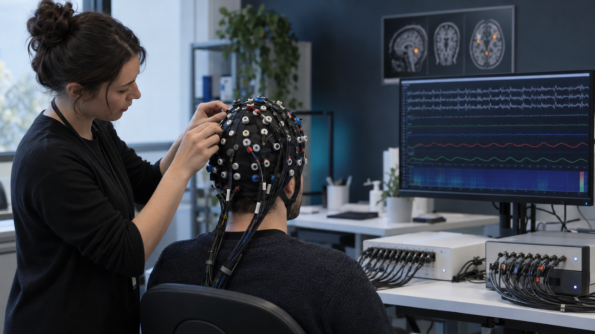
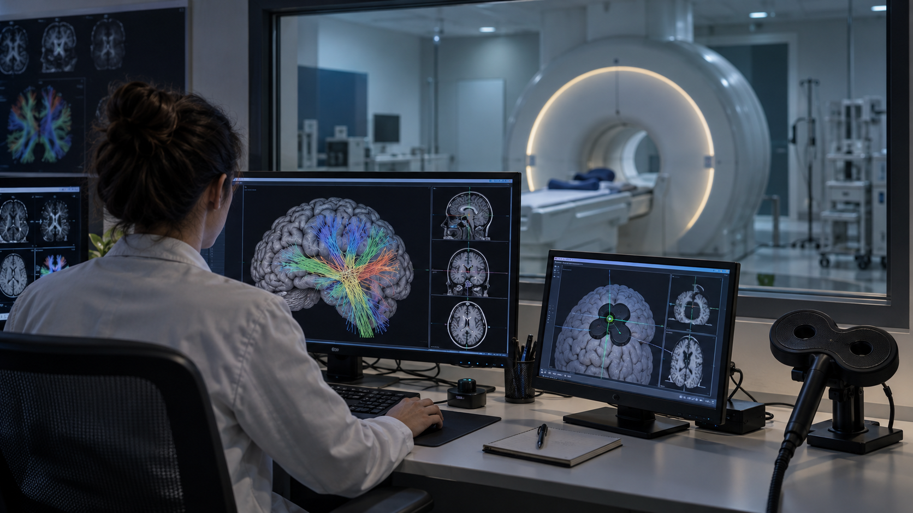
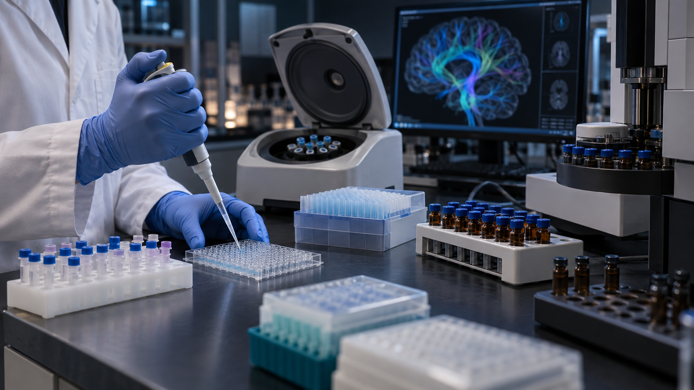

Youth mental health and development
Emotion regulation, cognitive control, risk and resilience across development and within the same person over time.
My research path began in clinical medicine and patient-facing psychiatric work, where I learned how clinical heterogeneity shapes measurement and outcomes. Addiction cohorts taught me recruitment, longitudinal follow-up and MRI/EEG quality control; depression neuroimaging and neuromodulation moved me toward analysis and participant-level interpretation. I now independently design synchronized EEG–fNIRS, physiological, behavioral and clinical studies to distinguish stable vulnerability from within-person state change in youth mental health.
My research development has been cumulative: clinical work defined the problems, cohort research taught me how evidence is built, and neuroimaging and neuromodulation prepared me to design multimodal studies around the questions I now want to answer.
I am a clinically trained multimodal human neuroscience researcher studying how dynamic brain, behavioral and physiological states relate to mental health and developmental variation.
My research perspective began with patient-facing clinical work. Working with psychiatric and addiction cohorts showed me that clinical heterogeneity is not simply a statistical complication—it affects how participants are recruited, assessed and followed, how data are acquired and interpreted, and ultimately whether a scientific question can be answered reliably.
My subsequent training in depression neuroimaging, repeated symptom measurement and neuromodulation moved me from clinical-cohort implementation and basic quality control toward analysis and participant-level interpretation. In my current work, I design synchronized multimodal studies from the scientific question backward, integrating protocol design, EEG–fNIRS, physiology, behavior, clinical assessment, synchronization, quality control and downstream analysis planning.
I now focus on youth mental health and on distinguishing relatively stable vulnerability from within-person state change. Across these projects, my role has grown across the full research chain—from clinically meaningful questions and protocol design to multimodal acquisition, data representation, computational analysis and translational application.
Emotion regulation, cognitive control, risk and resilience across development and within the same person over time.
Protocol, paradigms, interviews, synchronized EEG–fNIRS and physiology, quality control, ethics coordination and analysis planning.
Resting/task fMRI, DPABI/DPABISurf and DeepHCP training, repeated symptom measures, cognitive tasks and wearable follow-up.
Recruitment, screening, multidisciplinary coordination, acquisition workflows, basic MRI/EEG quality control and longitudinal follow-up.
B.M. in Clinical Medicine · Current: Tsinghua University CogDrive Lab · Clinical collaboration: Tongji Hospital, HUST · Previous research training: Shenzhen Mental Health Center, Tsinghua Yan Lab and Beijing Normal University Liu Lab.
The progression is both scientific and technical: clinical heterogeneity led me to prediction and brain–behavior questions; running cohorts led to preprocessing and analysis; analysis then taught me to design acquisition around the evidence I would eventually need.
Patient-facing medical training grounded my interest in heterogeneity, clinically interpretable measurement and outcomes that matter to patients.
In addiction research I coordinated recruitment, assessments, imaging workflows and follow-up, then learned how acquisition quality and data provenance constrain later conclusions.
Depression fMRI/rTMS work deepened neuroimaging analysis, DeepHCP/DPABI workflows and repeated-state phenotyping; MRI-guided TUS added causal-intervention exposure.
I now work from the question backward, designing the protocol, paradigms, synchronization, clinical workflow, quality control and downstream analysis plan as one system.
Clinical and addiction research raised the first question. Many patients understood the long-term consequences of alcohol or substance use yet still acted against those goals under craving, stress or negative affect. That made me interested not only in what a person knows, but in why knowledge is sometimes unavailable to behavior.
Neuroimaging and neuromodulation changed the level of explanation. MRI, repeated symptom measurement, rTMS and TUS shifted my attention from isolated regions toward dynamic network states: how control, reward, memory and affective systems are weighted in a particular context, and how measurement or intervention might identify the state currently governing behavior.
My current work turns that question into an experimental system. Concurrent EEG–fNIRS, physiology, gaze, behavior and clinical interviews allow me to study fast neural dynamics, hemodynamic coupling and observable state together. The next step is longitudinal modeling that separates stable vulnerability from context-sensitive change.
Scientific question: how can neural, hemodynamic, autonomic, behavioral and clinical signals characterize mental and emotional states across ages 6–18 while accounting for developmental differences? I independently designed the protocol, cognitive-affective paradigms, clinical interview workflow, synchronization architecture and quality-control plan for an IRB-approved cohort planning 300 clinical participants and 150 controls. The system integrates simultaneous 64-channel EEG–fNIRS with eye tracking, facial video, speech, ECG, PPG, GSR and respiration. BPlus software demonstrations and dry runs passed; real-hardware synchronization and formal pilot data collection remain pending. Health-cockpit translation is a later, validation-dependent application rather than the scientific identity of the project.
Three photographic reconstructions show the core experimental systems: synchronized neurophysiology, image-guided circuit research, and cross-scale gut–brain measurement.

High-density electrical and hemodynamic recording with synchronized behavioral and physiological signals.

Structural pathways, functional dynamics and individualized target localization.

From biospecimen processing to cross-modal integration with circuit-level measures.
Images are original photographic reconstructions created for this portfolio. They represent the experimental workflows and do not depict actual participants or identifiable clinical records.
This stage made the level of my responsibility more technical: direct MRI workflow management, structured neuroimaging training, repeated-state phenotyping and image-guided neuromodulation support.
Research Intern · Advisor: Prof. Chaogan Yan
Visiting Research Intern · Advisor: Dr. Zheyun Liu
These addiction studies are not separate identities. Together they show how I learned participant-facing research, multidisciplinary coordination, imaging/EEG acquisition, basic preprocessing, data organization and question-driven downstream analysis. Findings remain associative or preliminary unless stated otherwise.
GUT MICROBIOTA · METABOLITES · WHITE MATTER
Question: can microbiome and metabolic disruption be linked to white-matter injury and craving? I integrated 16S rRNA, GC–MS SCFAs and MRI in 220 participants. Three candidate microbial markers were associated with SCFA levels, and lower SCFAs correlated with lower FA in the anterior limb of the internal capsule and corpus callosum.
INTERVENTION · WHITE-MATTER CHANGE
Question: does TMP intervention relate to change in white-matter microstructure? I coordinated imaging for 160 participants, assessed pre/post FA in the corpus callosum and superior longitudinal fasciculus, and helped optimize the DTI + resting-state fMRI workflow. Preliminary differences require longitudinal confirmation.
METHAMPHETAMINE · FRONTOTEMPORAL CIRCUITS
Question: how do structural and task-state signals relate to cognitive impairment and risky choice? I independently acquired MRI/EEG from 10 participants, maintained an 80-case database, contributed to DTI/fMRI pathway analyses and led participant-held-out EEG/behavioral prediction for a first-author manuscript.
EXECUTIVE CONTROL · RELAPSE
Question: can structural–functional circuit measures help explain executive-control deficits and relapse risk? I examined DTI and task-fMRI relationships in 20 deeply phenotyped cases and developed an exploratory logistic-regression model to generate hypotheses for connectivity-informed intervention studies.
First-author work in prospective drinking outcomes, temporal relapse-risk modeling and participant-held-out prediction of risky decisions in methamphetamine dependence.
Submitted to Asian Journal of Psychiatry.
First author · Prospective cohort and longitudinal outcome analysis.
Submitted to Addiction Science & Clinical Practice (ASCP).
First author · Temporal validation and comparative modeling.
Submitted to Behavioural Brain Research.
First author · Participant-held-out EEG and behavioral prediction analysis.
One focused record of my research trajectory, ownership, manuscripts, clinical background and technical depth.
Complete CV showing what each project asked, what I personally contributed, how the methods answered the question, and how each stage prepared me for greater research ownership.
The categories below distinguish study design, acquisition, quality control, analysis and supporting exposure rather than presenting every modality as equal expertise.
Protocol and paradigm development, clinical interview workflow, TTL/LSL and event-trigger architecture, synchronized acquisition, multimodal QC and analysis-ready specifications.
Recruitment, psychiatric and developmental assessment, repeated follow-up, cohort coordination, IRB procedures, pediatric safeguards and clinically interpretable outcomes.
Resting/task fMRI, DTI tractography, FA/ADC, structural–functional connectivity, DPABI/DPABISurf, FSL, quality control and MRI-based targeting.
EEG and simultaneous EEG–fNIRS with ECG/PPG, GSR, respiration and eye tracking; synchronization, signal QC and exploratory neurovascular coupling.
Python, MATLAB, R and SPSS; regression/classification, cross-validation, AUC, participant-held-out and temporal validation, and longitudinal/repeated-measures analysis.
BPlus MVP-0, response/event logging, preflight and QC reporting, longitudinal databases, data dictionaries, multicenter harmonization and reproducible archiving.
rTMS records and repeated assessment; TUS with Brainsight neuronavigation, parameter logging, cognitive testing, tolerability and safety monitoring.
16S rRNA microbiome sequencing, GC–MS SCFA metabolomics, biospecimen workflows and cross-scale integration in addiction research.
I now need sustained theoretical and methodological training to turn accumulated skills into a coherent research program.
I began by learning how real clinical studies are conducted: recruiting and assessing participants, coordinating clinicians and technical teams, organizing longitudinal data, and performing basic imaging and EEG quality control. In later neuroimaging work, I moved closer to preprocessing, analysis and interpretation. In my current project, I work in the opposite direction—from the downstream scientific question back to the protocol, paradigms, synchronization, quality control and data structure.
This progression clarified that I am not pursuing MRI, EEG, fNIRS or AI as separate identities. I want to understand how clinically meaningful mental states vary across development and within the same person, how multimodal measures distinguish stable vulnerability from short-term change, and how those measurements could eventually support individualized assessment or state-sensitive intervention.
A PhD is the next step because these questions require deeper training in developmental theory, longitudinal and within-person modeling, multimodal inference and several years of sustained work on one program of inquiry.
My immediate research direction is to distinguish stable vulnerability from changing state in youth mental health. I want to study how emotion regulation, cognitive control and clinically meaningful symptoms vary across developmental stages and within the same person across contexts and time.
This question grew directly from my clinical work. In addiction and depression, behavior often cannot be explained by knowledge alone: a person may understand the long-term goal yet fail to recruit it under craving, stress or negative affect. I therefore want to understand how neural, physiological and cognitive systems dynamically compete, coordinate and route information into behavior.
Multimodal measurement is valuable only when each signal serves that question. EEG contributes fast neural dynamics; fNIRS/fMRI contribute network and hemodynamic information; physiology, gaze and behavior index embodied state; repeated clinical assessment anchors interpretation. Longitudinal and participant-level models can then test what is stable, what changes and what is useful for an individual.
During doctoral training, I hope to build longitudinal multimodal studies that combine repeated clinical phenotyping with EEG–fNIRS or fMRI, physiology, gaze and behavior. Methodologically, I want to develop participant-level models that distinguish trait-like vulnerability, context-sensitive state and measurement noise; test whether those models remain valid across age, task, site and time; and identify which signals are clinically meaningful for whom.
Longer term, once those measurement and validation foundations are established, I want to move from passive assessment toward adaptive systems: closed-loop neurotechnology or human–AI interfaces that respond to changing state, represent uncertainty and preserve clinician oversight. I see BCI and the Intelligence-to-Action framework as a long-term conceptual extension rather than an immediate claim—one that may eventually connect developmental clinical neuroscience, brain-state decoding and individualized intervention.
BPlus connects participant-facing cognitive and affective tasks with session-linked behavioral records, event markers, multimodal quality control and consolidated research reporting.
An English, open research-software preview for multimodal adolescent mental-health experiments.
I developed BPlus to make the experimental chain visible: what a participant saw and did, when an event marker was sent, which modality was imported, whether the data passed quality checks, and what evidence supports each research-facing result.
Research-use boundary: BPlus is not a medical device and does not diagnose depression or predict suicide risk. Software-only validation is reported separately from laboratory hardware, ethics and clinical validation.